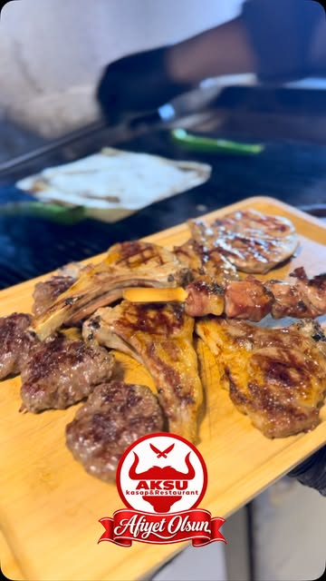

ATEŞİN BAŞINDAN. TAM KALBİNDEN.
ATEŞİN
BİR İMZASI
VAR.
Dumanı üstünde. Ustası başında.
İyi etin, gerçek ateşle buluştuğu yer: Aksu.
ATEŞTE PİŞER. HAFIZADA KALIR.
01GERÇEK ATEŞ
GERÇEK LEZZET
GERÇEK LEZZET
↓ AŞAĞI KAYDIR, ATEŞE YAKLAŞ.ÇEKİMLER: AKSU KASAP MUTFAĞI

01 — ATEŞİN BAŞINDAUSTALIK✳
SOFRADA
BİR KASAP. BİR MANGAL. BİR TUTKU.Gösterişi değil,
Gösterişi değil,
ateşi seviyoruz.
O ilk cızırtıyı. Köze düşen damlayı.
Bir masanın etrafında uzayan sohbeti.
Çatalca Subaşı'nda kasap ustalığını mangalın başına taşıyoruz. Özenle seçilen etler, el yapımı sucuklar ve doğal lezzetlerle; işin başından sofranın son lokmasına kadar buradayız.
Aksu sofrasını keşfedin ↘Aksu ailesi.CANINIZ NE ÇEKERSE
Bir kategori seçin,Her lezzetin bir yeri var.
lezzetin peşinden gidin. ↙
AKSU'NUN OBJEKTİFİNDENBiraz duman.
Instagram'da buluşalım@aksukasaprestaurant ↗Biraz duman.
Bolca iştah.
Gerçek mutfak, gerçek anlar. Kaydırın, ateşin başına geçin.
Kaydırdıkça yeni anlar sizinle.
İŞİN SIRRI, İŞİN BAŞINDA OLMAK.Son söz
KASAPTAN MANGALA. MANGALDAN SOFRAYA.Son söz
ateşin.
BİR MASA DA SİZE AYIRDIK.Yolunuz düşsün.
Instagram'dan iletişim ↗
Yolunuz düşsün.
Sohbetimiz uzasın.
Kapımız açık
Hafta içi 08.00 – 23.00
Hafta sonu 08.00 – 01.00